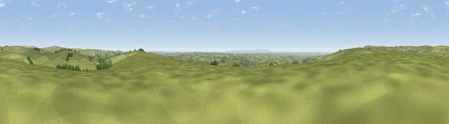

Brimblecombe Hill
#11054 in England · top 19% of its area beats it · near HawkridgeThe view, rendered

A 360° render of this exact spot computed from the terrain model, tree cover and land cover — summer colours, afternoon light, calibrated against photographs of famous viewpoints. Real trees, hedges and buildings will differ in detail.
The panorama
Grey silhouette: terrain skyline in each direction (720 bearings, Earth curvature and refraction included). Dashed green: skyline with trees (+15 m) and buildings (+8 m) as obstacles. Blue strip: how far the ground is visible on each bearing.
Where the view opens
Wedge length = distance to the farthest visible ground on that bearing (vegetation-aware). Rings at 10, 25 and 50 km.
What fills the view
90% grassland · 7% woodland · 3% cropland
Angular shares of the visible panorama (visual magnitude), not map area. Landscape diversity 0.17 (0–1 Shannon).
Key numbers
More beautiful places nearby
The staircase of upgrades: each row has a higher view potential than everything closer. Driving times are estimates from straight-line distance, calibrated against real road routing — check an actual route before setting out.
| Place | Direction | Drive | Score |
|---|---|---|---|
| Viewpoint near Hawkridge | SE · 0 km | ~2 min | 65.1 |
| Viewpoint near Twitchen | W · 3 km | ~7 min | 66.0 |
| Viewpoint near Twitchen | WNW · 6 km | ~13 min | 69.1 |
| Viewpoint near Simonsbath | NW · 11 km | ~20 min | 73.1 |
| Viewpoint near Brayford | WNW · 12 km | ~23 min | 74.1 |
| Viewpoint near Exford | NNE · 13 km | ~23 min | 77.1 |
| Viewpoint near Luccombe | NNE · 13 km | ~24 min | 84.5 |
| Viewpoint near Luccombe | NNE · 15 km | ~27 min | 84.6 |
51.05664, -3.66428 · source: osm peak · position refined by local search. Computed location — check access rights before visiting.